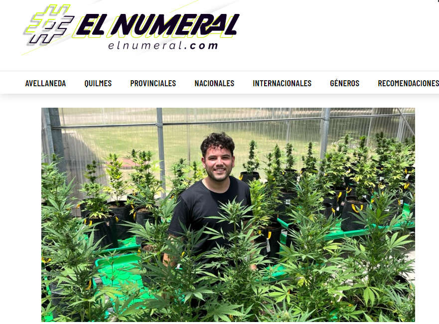
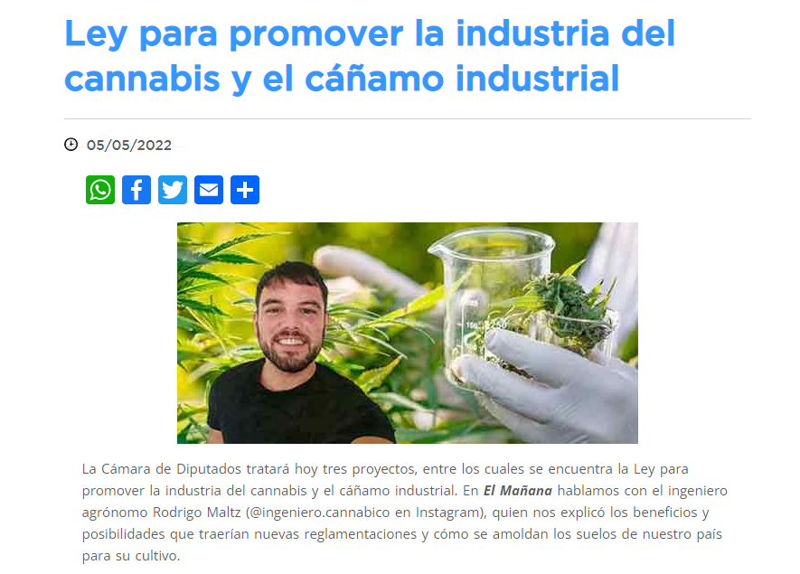
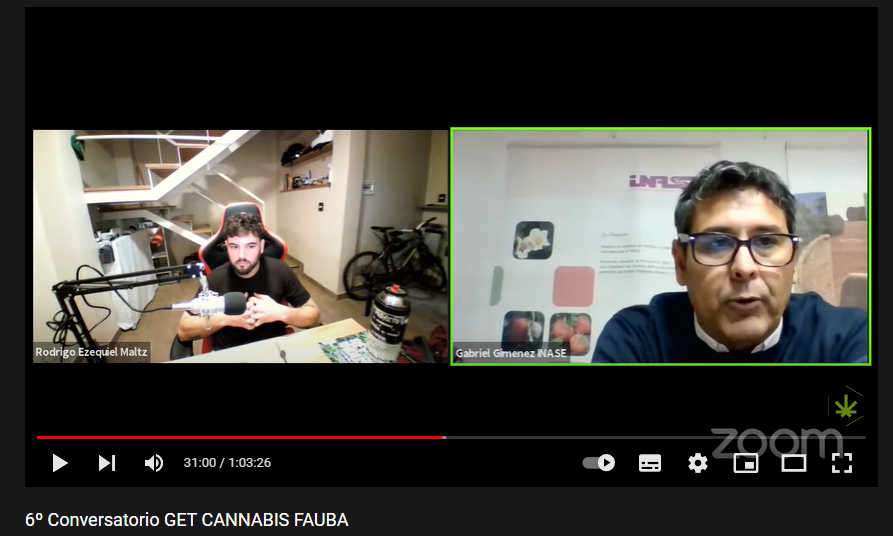
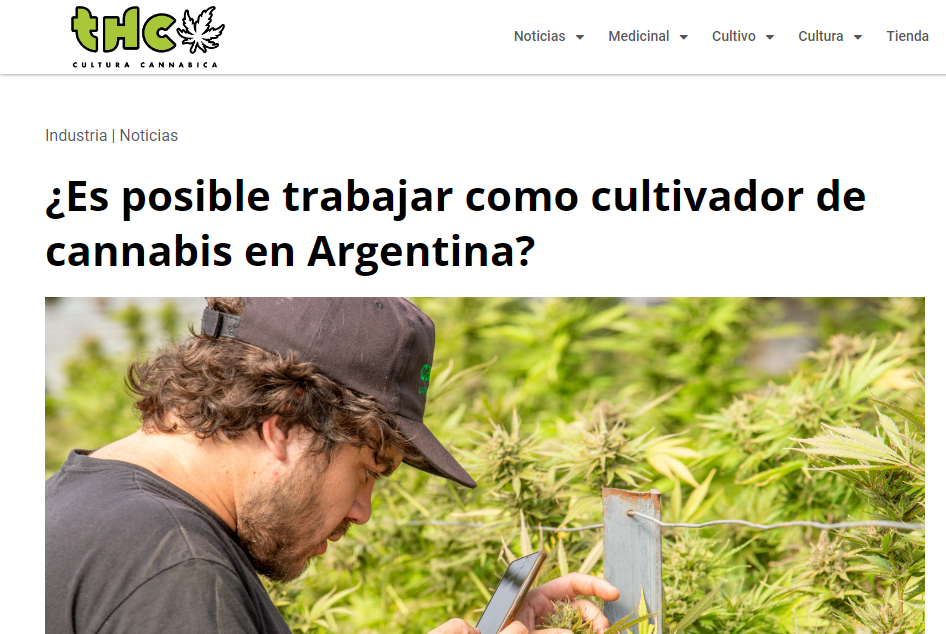
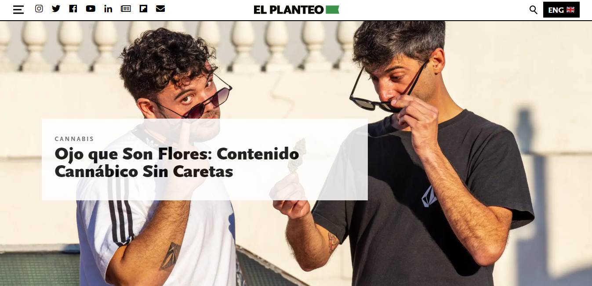

Abr 20, 2022
Entrevista realizada para la revista Rolling Stone

En esta sección podrás encontrar notas y entrevistas realizadas para distintos medios de prensa.
May 28, 2022
El 24 de mayo se promulgó la Ley del Marco Regulatorio para el Desarrollo de la Industria del Cannabis Medicinal y el Cáñamo Industrial. ¿Qué implica y cómo impacta socialmente en nuestro país? Conversamos con Rodrigo Maltz, ingeniero agrónomo, especializado en Cannabis.
May 16, 2022
Cannabis medicinal, insumos, conocimiento. Rodrigo Maltz es agrónomo y divulgador del cannabis medicinal. En diálogo con El Numeral advierte que "el tema de las sustancias hay que desestigmatizarlo para que sea tratado como una cuestión de salud pública".
May 05, 2022
Rodrigo Maltz, ingeniero cannábico, visitó a Gonzalito Rodríguez en la FM Rock and Pop y respondió todas las consultas sobre la marihuana, su cultivo y su uso medicinal.
¿Para qué sirve el aceite cannábico? ¿De qué depende el sabor? ¿Cómo saber qué dosis es la correcta? ¿Se puede administrar en animales?
Dale play y escuchá lo que dijo en Tardes Bestiales.
May 5, 2022
La Cámara de Diputados tratará hoy tres proyectos, entre los cuales se encuentra la Ley para promover la industria del cannabis y el cáñamo industrial. En El Mañana hablamos con el ingeniero agrónomo Rodrigo Maltz (@ingeniero.cannabico en Instagram), quien nos explicó los beneficios y posibilidades que traerían nuevas reglamentaciones y cómo se amoldan los suelos de nuestro país para su cultivo.
Abr 28, 2022
Conversatorio junto a Gabriel Gimenez INASE Argentina (director nacional de articulación federal) donde el tema a tratar será ¿Como se inscriben variedades de Cannabis Sativa en Argentina?
Abr 11, 2022
De visita en el programa de Rock And Pop Tardes Bestiales, Rodrigo Maltz, ingeniero cannábico, explicó qué es y cómo funciona el REPROCANN y dio los mejores consejos para cultivar las plantas en casa.
¿Cuántas plantas puedo tener? ¿Cuáles son las condiciones ideales para comenzar con el autocultivo? ¿Qué es el aceite de cannabis? ¿Qué es el CBD y THC? ¿Cómo se puede testar el producto que vamos a consumir?
Dale play y escuchá todo lo que contó Rodrigo Maltz en Rock & Pop..
Mar 28, 2022
¿Es posible trabajar como cultivador de cannabis en Argentina?
Oct 22, 2021
En comunicación con Gonzalito Rodríguez, Rodrigo Maltz, ingeniero agrónomo y especialista en cultivo y producción de aceite de cannabis medicinal, habló sobre los distintos usos del aceite, las reglamentaciones y explicó paso por paso cómo producirlo desde una semilla. Además recomendó los mejores lugares para testearlo una vez realizado.
Escuchá todo lo que dijo en Tarde Bestiales.
Abr 13, 2021
Cannabis medicinal, insumos, conocimiento. Rodrigo Maltz es agrónomo y divulgador del cannabis medicinal. En diálogo con El Numeral advierte que "el tema de las sustancias hay que desestigmatizarlo para que sea tratado como una cuestión de salud pública".
Ene 21, 2021
Ojo que Son Flores: Contenido Cannábico Sin Caretas.
